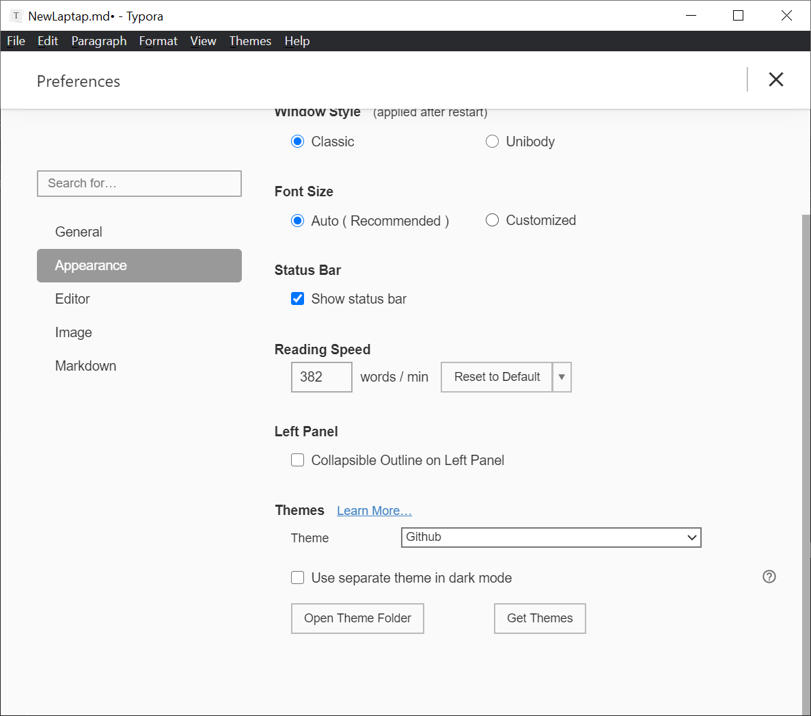
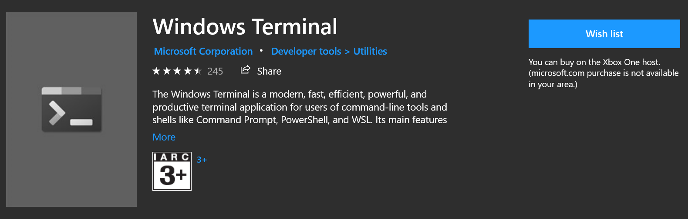

New Laptop
Step 0: Before All
2021年2月23日，我拿到了自己的新电脑，LG Gram 2021 16寸电脑。在这里记录我对电脑的配置过程和一些使用体验。
Step 0.1: Reinstall Windows
在一切的一切之前，我先重新安装了系统。Windows家庭版缺少组策略和磁盘安全管理的功能，对我而言使用不是那么理想。所以在这里先重新安装了一些。不过这个时候问题已经出来了，重新安装Windows之后，由于驱动也被一并卸载了，所以需要重新安装。
百度lggram贴吧已经给出了一个解决方案：
https://tieba.baidu.com/p/7239910408
可以在这里下载LG Control Center
当然，也可以在LG官网的驱动支持里找到需要的内容。
Step 0.2: Windows Insider
为了使用一些特殊的功能需求，在这里我加入了Windows Insider计划，不过为了笔记本的稳定和安全，我这台电脑加入的是Beta测试。同时用学校的KMS激活了一下我的Windows Pro。
Step 0.3: Network
网络相关的配置是一切工作最重要的一个部分之一了。包含了下面这些工作：
- 安装Clash for Windows，启用代理
- 安装Chrome Browser，启用Google的系列服务，包括我的密码、收藏夹、插件
- 找到之前的笔记本的SSH密钥对，放在用户目录下
Step1: Basic Software Install
下面我把自己常用的软件安装记录一下：
搜狗输入法
这个应该不用太多解释，毕竟还是有中文输入的需求的，搜狗可以把你的输入习惯和词库记录，迁移性非常好。
Snipaste
这个是我个人比较常用的截图工具，在Microsoft Store里面下载。
Typora
Markdown个人最喜欢的编辑器
下载地址：https://typora.io/
这里补充一些，用于默认的主题都不是特批满意，个人在typora主页里面下载了额外的主题风格，我个人选择的是Ursine。
在这里可以打开Style文件夹，对风格进行配置。
Eartrumpet
WIndows下最好用的音量管理工具，比原有的音量设置好用的多。

同样在Microsoft Store里面下载。
这里我补充一个测量，因为Eartrumpet是一个独立的工具，两个喇叭按钮在下面放着可能会比较奇怪。移除Windows原生的音量控制会有点点小小的麻烦，具体操作如下：（这个时候就体现出组策略的优势了）
Windows+R执行gpedit.msc
如图所示，左侧的 User Configuration > Administrative Templates > Start Menu and Taskbar，在里面找到Remove the volumn control icon。启用这个选项就可以了。
AutoHotKey
这个工具是一个必需品，为了下一个工具做准备。
Capslock-plus
一个非常好用的键盘扩展工具，具体的教程和介绍可以看这里：
https://capslox.com/capslock-plus/
建议从此处下载：
https://github.com/wo52616111/capslock-plus
下载AHK代码，直接执行。
WIndows Terminal
阳间终端，虽然现在Windows的终端比以前好看了一点点，但是黑Windows Terminal还是没有什么可比性的。
Microsoft Store安装即可。
社交通讯
QQ，微信，腾讯会议，telegram，飞书，Zoom
choco
Windows下安装的一个利器，可以简单快捷的安装各种其他软件
gsudo
这个是用choco安装的一个便捷工具，作用和linux下的Sudo一样，可以在管理员权限下使用命令。
pandoc
又是一个非常重要的基础工具，可以作为插件给其他软件使用，用于各种格式的文件的转换。
Microsoft Office
Office 系列，用于常用编辑。
Visio
作图工具
Teamviewer
远程操作
VNC Viewer
VNC 控制台
Zotero
论文整理
Steam
为了摸鱼
Matlab
科研工具
Mathematica
计算器
Foxit Reader
PDF阅读器、编辑器、OCR识别
Source Code Pro
字体配置
https://fonts.google.com/specimen/Source+Code+Pro?preview.text_type=custom
Google 字体下载
解压之后放在
C:\Windows\Fonts里即可同时补充一个中文字体：Sarasa
安装方法同理
Bandizip
解压软件，7Zip的界面太丑了，有点难忍
Fences
桌面整理管理工具，可以用Nimi Places代替
总Steam里购买下载
Step2: Programming Environment
2.1 Python
先把最简单的工具安装起来，这个直接在官网下载安装程序就OK了。
2.2 Visual Studio
2.3 Visual Studio Code
这个才是真正的核心工具，插件完善，功能多元。
至于插件安装和配置之后会写一篇，我目前都用VSCode的同步功能，非常好用。
2.4 Git
版本管理工具，不可或缺。
2.5 MSYS
用类似Arch的管理方法去管理各种基础编译环境，作用和以前的Cygwin是一样的，不过更加优秀。
2.6 WSL2
这个是我日常工作不可或缺的一部分了，是我最常用的虚拟工作环境。
https://www.omgubuntu.co.uk/how-to-install-wsl2-on-windows-10
此处为安装教程。

如果安装不成功，需要下载wsl_update_x64进行补丁。
安装之后就可以顺利启动了。
2.7 Jetbrains
- CLion
- Pycharm
- PHPStorm
- WebStorm
- Idea
这5个都属于我的常用工具，官网下载即可。
2.8 X410
X转发服务器，这里选用了X410，Microsoft Store 购买。
安装之后需要将WSL2和X410进行绑定和使用。使用有些技巧，在X410启动之后，需要更改WSL2的显示设置，在bashrc末尾添加如下内容：
1 | |
这样就实现了WSL的X转发。
2.9 Tilix
Tilix是我个人偏好的终端，是在Linux下分屏最方便的终端。安装在WSL中进行：
1 | |
安装即可。
在windows中更自然的使用，需要做一下额外的调整和配置。
用AHK写一个快速启动的配置，使用更加像Linux。
1 | |
这里有一个使用习惯，Ctrl + BackSpace用于删除整个单词。